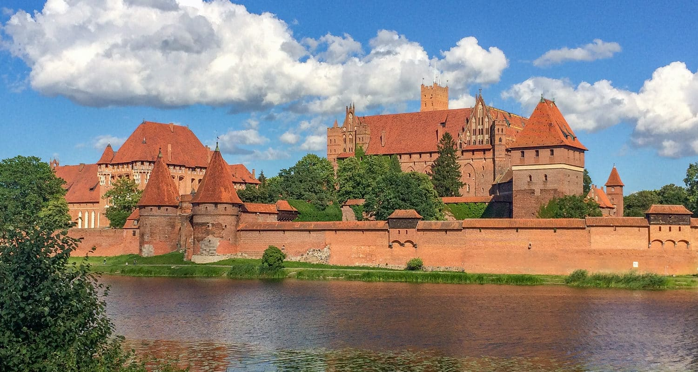

Zamek Malbork
Zamek w Malborku (niem. Ordensburg Marienburg) – zamek w Malborku, na prawym brzegu Nogatu, wzniesiony w kilku etapach od 1280 do poł. XV w. przez zakon krzyżacki. Początkowo konwentualna siedziba komtura, od 1309 po przeniesieniu przez Siegfrieda von Feuchtwangena stolicy zakonu do Malborka, siedziba wielkich mistrzów zakonu krzyżackiego i władz Prus Zakonnych do 1457, w latach 1457–1772 rezydencja królów Polski, od 1466 siedziba władz Prus Królewskich, od 1568 siedziba Komisji Morskiej, w 1772 zajęty przez administrację Królestwa Prus i zdewastowany w latach 1773–1804; rekonstruowany w latach 1817–1842 i 1882–1944, zniszczony w 1945, ponownie rekonstruowany od 1947; w 1949 wpisany do rejestru zabytków, w 1994 uznany za pomnik historii, w 1997 wpisany na listę światowego dziedzictwa UNESCO; od 1961 siedziba Muzeum Zamkowego w Malborku. W 1286 na południe od zamku lokowano Malbork (Stare Miasto), którego mury miejskie sprzężono z murem obronnym zamku w jednolity system obronny. W 1388 na wschód od zamku założono Nowe Miasto. W latach 1626–1635 miasto i zamek otoczono wałem fortecznym o narysie bastionowym, zaś przyczółek mostowy na lewym brzegu Nogatu osłonięto dziełem rogowym.